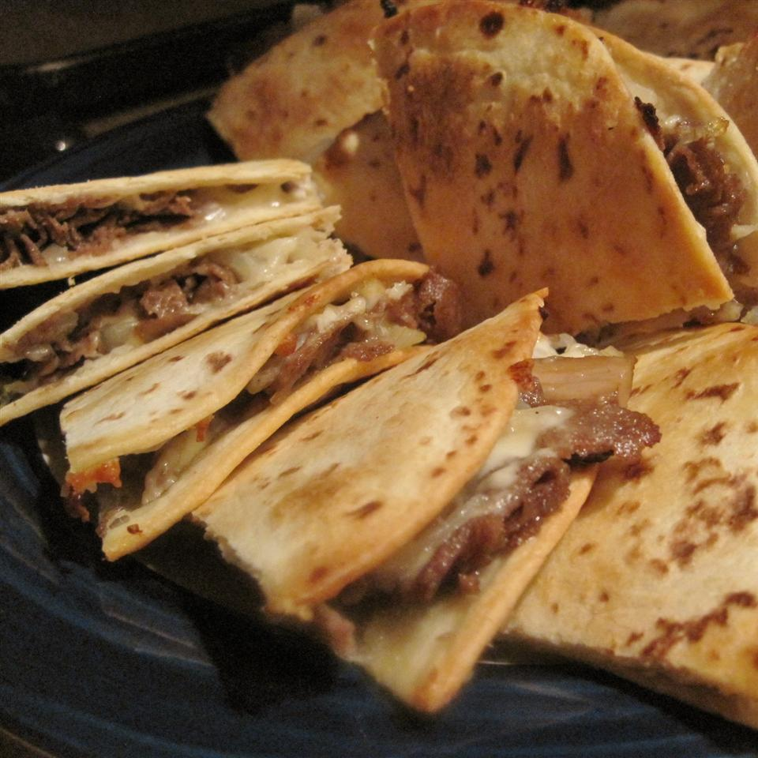

Philly Cheesesteak Quesadillas

Meet your new favorite dinner: these Philly cheesesteak quesadillas are quick and hearty, and they'll put a smile on any diner. For a more authentic Philly cheesesteak taste, ditch the barbecue sauce and use American or Provolone cheese.
Ingredients
- 1 (1 pound) beef top sirloin, thinly sliced
- 2 small onions, sliced
- 2 green bell peppers, sliced
- 1 cup barbeque sauce (such as Bull's-Eye® Texas-Style Bold Barbeque Sauce)
- 8 (10 inch) flour tortillas
- 2 cups shredded Cheddar cheese
Process
- Preheat oven to 425 degrees F (220 degrees C);
- Heat a skillet over medium heat; cook and stir beef until browned, 5 to 7 minutes. Add onions and green bell peppers to beef; cook and stir until softened, 5 to 10 minutes. Pour barbeque sauce over beef mixture and simmer until sauce is slightly reduced, about 10 minutes;
- Lay 4 tortillas on a baking sheet and top each with beef mixture and Cheddar cheese. Top each Cheddar cheese layer with a tortilla;
- Bake in the preheated oven for 10 minutes; flip the quesadillas and cook until cheese is melted, about 5 minutes more;
Back to the Recipes